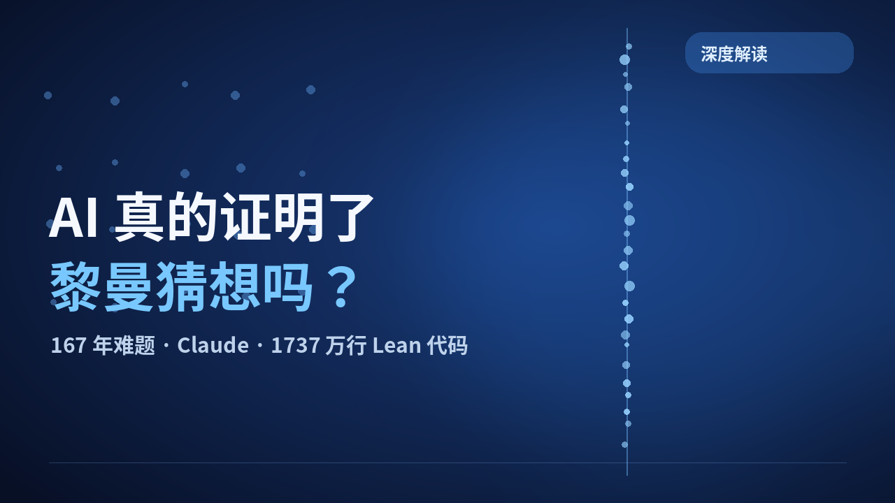

一个困扰人类 167 年的数学难题，被一位 Anthropic 数学家宣布"用 Claude 证明了"。
但交付物不是论文，而是 14 个压缩包、1737 万行人类读不完的 Lean 代码。
这件事的内核，和"AI 是不是超过了人类"关系不大。真正值得看清的，是这场证明里人和机器各自站在什么位置。
11 月 20 日，Anthropic 的数学家 Levent Alpöge 在个人网站发了一份 4 页声明，开头写道：
"我相信，我已经与 Claude 合作，找到了黎曼猜想的证明。"
他还说，这套方法"很容易扩展"，能顺手解决广义黎曼猜想，再花点时间还能处理扩展黎曼猜想。
黎曼猜想 1859 年由黎曼提出，关乎素数的分布规律。它是克雷数学研究所悬赏 100 万美元的千禧难题之一，一百多年来无数人宣称攻克，最后都翻了车。
和以往最大的不同是交付形式。Alpöge 没有写论文，而是给出了 Lean 代码——一种能逐行机器验证数学推理的语言。
据媒体报道，这些代码打成 14 个压缩包，解压后 1737 万行，展开成文字超过 25 万页。Alpöge 自己说，硬写成论文"只会是一大坨谁也看不懂的东西"。
这份声明里最抓人的细节，是 Alpöge 对合作过程的描述。
他的思路是这样的：函数域里有一套叫 Stepanov 的方法，靠"重数"获得更强的约束；但这套技巧搬到整数域就失灵，"就像对一个整数求导，根本无从下手"。
他的办法是在整数世界里用一长串环环相扣的操作，把重数"模拟"出来。这串操作用的是自守形式里的 theta 提升，串成一条链。
关键的一步来自 Claude：对长度为 X 的 von Mangoldt 求和，把提升链的长度设为 √X。
Alpöge 评价，光是这一个思路，就"足以让熟悉相关领域的数学家从椅子上摔下来"。
他还坦白，临近终点时 Claude 的推进远超自己，尤其在自己不熟悉的高秩群自守形式领域；声明里部分技术解释就来自 Claude 的总结，他自己转述都可能有偏差。
这份声明目前还没被独立核验，几个问号必须摆出来。
第一，Lean 检查的是"代码有没有按规则证明命题"，可它没法替你确认"这个命题是不是你要证的黎曼猜想"。两件事都要人去查。
第二，声明和发布时间本身就有争议。消息放出时正值 Anthropic 上市期间，Alpöge 自己在 PDF 里也写了"这个时间点糟透了"，说他知道会有人往阴谋论上想。
第三，历史教训太密。2018 年，菲尔兹奖和阿贝尔奖双料得主阿蒂亚爵士高调宣布证明黎曼猜想，几乎没得到任何数学家认可。
数学研究者 Elliot Glazer 说他在编译那份代码，要跑好几个小时，估计 Lean 本身出 bug 的概率不到 1%。曼彻斯特大学的数论学家 Thomas Bloom 也表示，Lean 社区专家正在查。
也就是说，结论还没出来，让消息飞一会儿。
我读这件事，没有读出"AI 超过人类"，读出的是一种新的研究分工正在成型。
人负责定方向、判断哪条路有数学意义、识别出那个"从椅子上摔下来"的关键洞见到底重不重要。模型负责在人指定的框架里做海量、复杂、超出单人知识边界的技术推演。形式化工具负责机械地检查每一步推理。
三者各干各擅长的事，而"理解并把成果讲清楚"，仍然要人接着投入。Alpöge 自己就把理解放在后续工作的中心，说他希望把论证大幅简化、写成能让人读懂的文字。
这比"AI 一键解决百年难题"的现实版本朴素得多，但也许更接近真相。
至于这次到底成不成立，我不急着下结论。比起一个热搜式的欢呼，我更想等一份可复现的验证记录，和数学家对核心思路的解释。
声明来源：Levent Alpöge 个人网站 remark.pdf（2026-11-20）；事实核对参考机器之心、财联社等公开报道，本文未对 Lean 工程进行编译或证明审计。
这里是揽宝投研，专注 AI 与量化投研领域的内容整理。
我会持续追踪值得深读的技术进展，把事实与观点分开写清楚。
欢迎在后台留言，聊聊你想看的选题。
揽宝投研
专注 AI 与量化投研的内容整理
点击上方名称关注，第一时间看到更新。